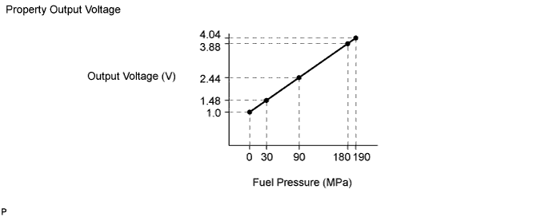
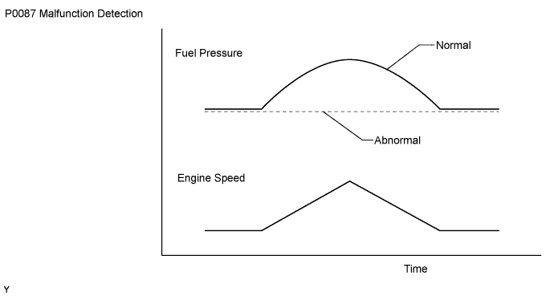
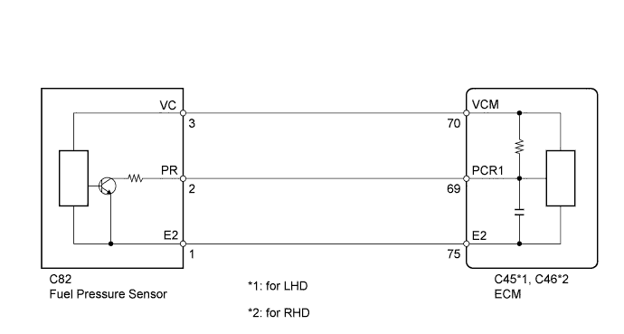
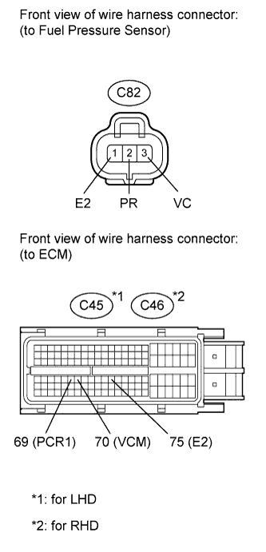
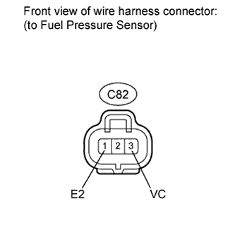

DTC P0087 Fuel Rail / System Pressure - Too Low |
DTC P0190 Fuel Rail Pressure Sensor Circuit |
DTC P0192 Fuel Rail Pressure Sensor Circuit Low Input |
DTC P0193 Fuel Rail Pressure Sensor Circuit High Input |

| DTC Detection Drive Pattern | DTC Detection Condition | Trouble Area |
| After idling for 60 seconds, repeat quick engine speed accelerations (to 2500 rpm) for 30 seconds | Fuel pressure sensor output voltage stays at fixed value for 90 seconds (1 trip detection logic). |
|
| DTC Detection Drive Pattern | DTC Detection Condition | Trouble Area |
| Engine switch on (IG) for 1 second | Fuel pressure sensor output voltage is 0.55 V or less, or 4.9 V or more for 0.5 seconds (1 trip detection logic). |
|
| DTC Detection Drive Pattern | DTC Detection Condition | Trouble Area |
| Engine switch on (IG) for 1 second | Fuel pressure sensor output voltage is 0.55 V or less for 0.5 seconds (1 trip detection logic). |
|
| DTC Detection Drive Pattern | DTC Detection Condition | Trouble Area |
| Engine switch on (IG) for 1 second | Fuel pressure sensor output voltage is 4.9 V or more for 0.5 seconds (1 trip detection logic). |
|
| DTC No. | Data List |
| P0087 |
|
| P0190 | |
| P0192 | |
| P0193 |


| 1.CHECK DTC OUTPUT |
Connect the intelligent tester to the DLC3.
Turn the engine switch on (IG) and turn the tester on.
Enter the following menus: Powertrain / Engine / DTC.
Read the DTCs.
| Display (DTC output) | Proceed to |
| P0190, P0192, P0193 | A |
| P0087 | B |
|
| ||||
| A | |
| 2.CHECK HARNESS AND CONNECTOR (FUEL PRESSURE SENSOR - ECM) |
 |
Disconnect the fuel pressure sensor connector.
Disconnect the ECM connector.
Measure the resistance according to the value(s) in the table below.
| Tester Connection | Condition | Specified Condition |
| C82-2 (PR) - C45-69 (PCR1) | Always | Below 1 Ω |
| C82-3 (VC) - C45-70 (VCM) | Always | Below 1 Ω |
| C82-1 (E2) - C45-75 (E2) | Always | Below 1 Ω |
| Tester Connection | Condition | Specified Condition |
| C82-2 (PR) - C46-69 (PCR1) | Always | Below 1 Ω |
| C82-3 (VC) - C46-70 (VCM) | Always | Below 1 Ω |
| C82-1 (E2) - C46-75 (E2) | Always | Below 1 Ω |
| Tester Connection | Condition | Specified Condition |
| C82-2 (PR) or C45-69 (PCR1) - Body ground | Always | 10 kΩ or higher |
| C82-3 (VC) or C45-70 (VCM) - Body ground | Always | 10 kΩ or higher |
| C82-1 (E2) or C45-75 (E2) - Body ground | Always | 10 kΩ or higher |
| Tester Connection | Condition | Specified Condition |
| C82-2 (PR) or C46-69 (PCR1) - Body ground | Always | 10 kΩ or higher |
| C82-3 (VC) or C46-70 (VCM) - Body ground | Always | 10 kΩ or higher |
| C82-1 (E2) or C46-75 (E2) - Body ground | Always | 10 kΩ or higher |
|
| ||||
| OK | |
| 3.CHECK ECM (FUEL PRESSURE SENSOR VOLTAGE) |
 |
Disconnect the fuel pressure sensor connector.
Measure the resistance according to the value(s) in the table below.
| Tester Connection | Switch Condition | Specified Condition |
| C82-3 (VC) - C82-1 (E2) | Engine switch on (IG) | 4.5 to 5.5 V |
|
| ||||
| OK | |
| 4.REPLACE FUEL PRESSURE SENSOR (COMMON RAIL (for Bank 1)) |
Replace the common rail (for bank 1) (Click here).
| NEXT | |
| 5.CHECK WHETHER DTC OUTPUT RECURS (DTC P0087, P0190, P0192, P0193) |
Connect the intelligent tester to the DLC3.
Turn the engine switch on (IG) and turn the tester on.
Clear the DTCs (Click here).
Let the engine idle for 60 seconds, and then repeat quick engine speed accelerations (to 2500 rpm) for 30 seconds.
Enter the following menus: Powertrain / Engine / DTC.
Read the DTCs.
| Result | Proceed to |
| P0087, P0190, P0192 or P0193 is output | A |
| No DTC is output | B |
|
| ||||
| A | |
| 6.REPLACE ECM |
Replace the ECM (Click here).
|
| ||||
| 7.REPAIR OR REPLACE HARNESS OR CONNECTOR |
| NEXT | |
| 8.CONFIRM WHETHER MALFUNCTION HAS BEEN SUCCESSFULLY REPAIRED |
Connect the intelligent tester to the DLC3.
Clear the DTCs (Click here).
Turn the engine switch off.
Turn the engine switch on (IG).
Let the engine idle for 60 seconds, and then repeat quick engine speed accelerations (to 2500 rpm) for 30 seconds.
Confirm that the DTC is not output again.
Enter the following menus: Powertrain / Engine / Utility / All Readiness.
Input DTC P0087, P0190, P0192 and/or P0193.
Check that STATUS is NORMAL. If STATUS is INCOMPLETE or UNKNOWN, increase idling time.
| NEXT | ||
| ||